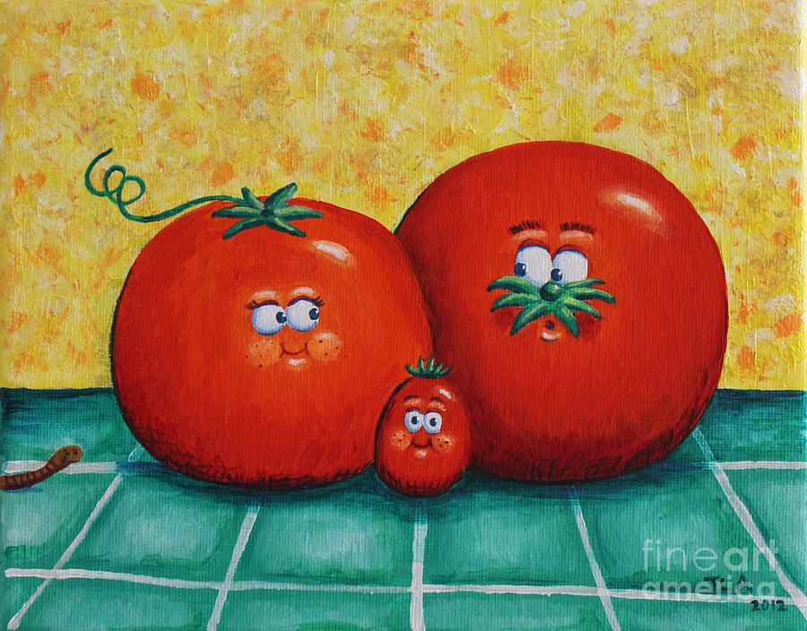

Characters are Mom,Dad and Baby
Once upon a time there was a tomato family . One day the mom wanted to take a walk but the dad had to work so her next option was the baby . She and the baby were having fun they stoped for food and a nice slushy . When they stoped to a hill (looked like a mountin) . The only way to get back home was to clim up the hill so they climed the hill , the baby was far behind trying to clim the hill that is when the mom said hurry up . The baby tried but could not so the mom ran over and said ketchup . As she said that she smashed the baby with her bare hands then she thought of getting french fries . THE END
 check out my cool video on youtube and supscribe or like meAWS support provided by Dad aka Robert Hutto. Using Github, S3 static website deployed by Codepipeline and CodeBuild